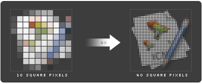

During the World Wide Developer Conference last week Apple quietly made some announcements concerning the future of icon design and interface design. We all read the articles (1, 2, 3) about resolution independence but in my opinion nobody really explained the consequences for software developers.
In short, every icon or image resource contained in an app will be 4x more detailed. Yes every icon and resource. The good news is that Apple indicated not to expect screens that support high resolution before 2008.
So what does this mean in detail? To start with app icons, support will grow from the default size of 128 pixels now to a huge 512 pixels in square. And for all the other icons (toolbar and list icons) the same will happen. 32 pixel icons will support 128 pixels, 24 pixel icons will support 96 pixels, and 16 pixel icons will support 64 pixels.
The bad news is that this change will cost an enormous amount of money and time for developers. I know for a fact that Apple themselves are hard at work at updating and recreating a lot of icons to conform to their own standard as we speak. And I doubt that they will be done by the release of Leopard.
Basically what it means for a designer like me is that everything is going to take about 2x to 4x longer to create. Especially for the toolbar and list icons. But even creating 512 pixel application icons is going to be a very costly undertaking for small developers.
So what to do? My advice would be to just stick to the current standard. A lot of people are very confused by the resolution independence thing while in fact it's really simple. A 32 pixel icon is 0.4 inch by 0.4 inch, the new 128 pixel variant will be squeezed in that same 0.4 inch rectangle. Because by that time we will have screens that have a higher resolution then 72 dots per inch (dpi), you will be able to see more detail in that same 0.4 inch rectangle. So the icon will not grow in size, but instead will grow in detail and dpi. If you don't provide a more detailed 128 version it will just show the 32 version, meaning you will just see the icon as you see it now on your current display. Nice an pixelated, no harm at all. So this high resolution support is not created to allow zooming in on the interface, but is contrarily implemented to allow more detail at the same size.
Within the same visible screen area, the density of pixels will be raised to provide room for 4x more pixels.
A note of interest; the 72 dpi standard was chosen based on the capability of the human brain to smooth the pixel roughness at that resolution. Similar to how the human brain smoothes the motion in between 24-30 frames per second video material. So technically speaking average users do not need these high resolution screens. It's an invention that will allow visual professionals to finally proof their material on screen instead of on print.
As far as those beautiful new screens are concerned. Apple has indicated they will start appearing in 2008, and from what I can tell those screens will not be for Joe average. Those will be high end visual post-production (photographers, graphic designers, movie makers) screens, and will most probably cost quite a few dollars.
But as it stands Apple hasn't released much technical documentation on this subject, so we have no idea how they will technically implement these changes. My guess would be that they will upgrade the .icns file format to support larger icon resources. Developers will then need to start using .icns files everywhere so that the system itself can select the correct sized resource just like it does now for application icons in the various file views. Or Apple could further support multi page .tiff files for toolbar icons, maybe a combination like now. The only big question that remains is how we have to handle other image files. I guess we will just have to wait and see.